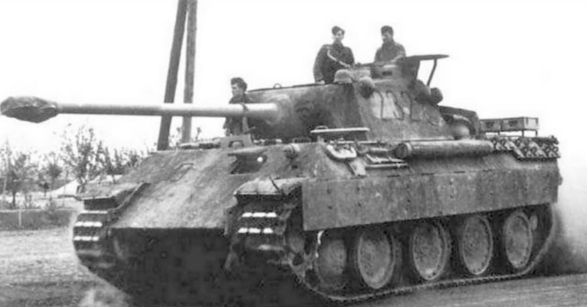
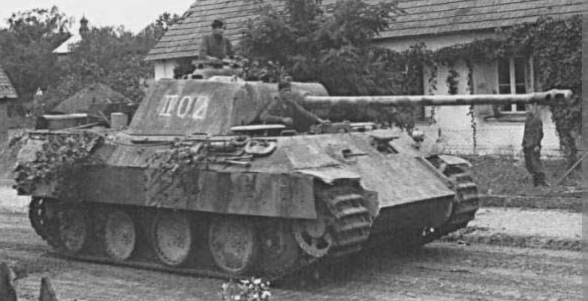
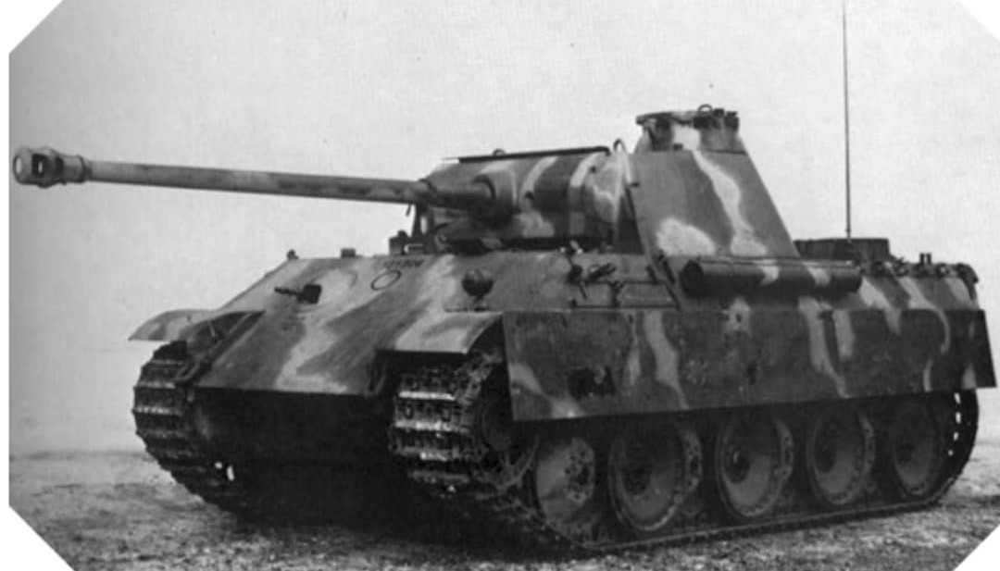
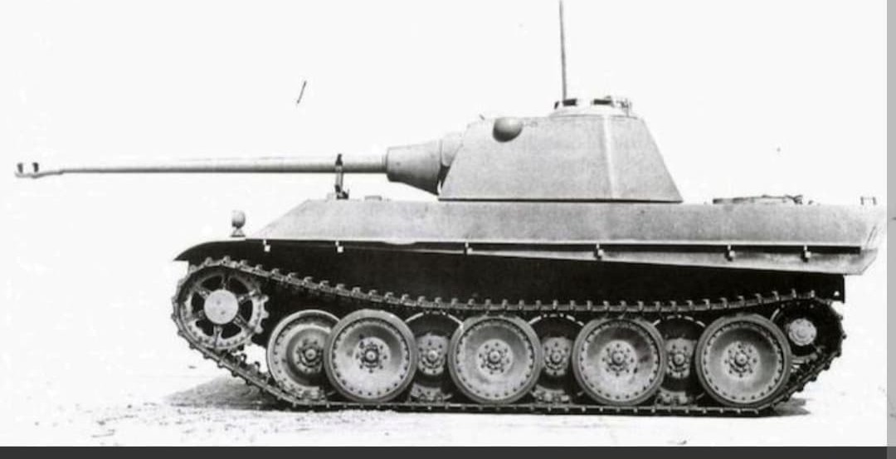
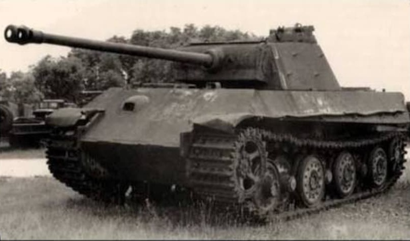

Le Panzerkampfwagen V Panther (Sd.Kfz. 171) est le char moyen d'élite conçu par l'Allemagne pour répondre au T-34 soviétique. Combinant pour la première fois chez les Allemands un blindage incliné, une grande mobilité et la puissance de feu du canon long KwK 42 de 75 mm, il est considéré comme l'un des meilleurs blindés de la Seconde Guerre mondiale.

Première version produite en série, engagée massivement lors de la bataille de Koursk (Opération Citadelle) en juillet 1943. Elle se distingue par son arceau de vision pour le conducteur et quelques faiblesses mécaniques de jeunesse.

Version grandement améliorée pour corriger la fiabilité mécanique du modèle D. Elle introduit une nouvelle tourelle équipée d'un mantelet moulé et d'un coupole de chef de char à visioprismes.

Version la plus produite et la plus aboutie du Panther. Redesign de la superstructure avec suppression du mantelet à mentonnière piège à obus, blindage latéral épaissi et simplification de la fabrication.

Évolution ultime prévue pour 1945, dotée de la nouvelle tourelle étroite « Schmalturm » réduisant la surface exposée tout en offrant un blindage accru et un télémètre stéréo.

Projet de modernisation lourde visant à standardiser certains composants avec le Tiger II et à renforcer le blindage frontal. Le projet fut abandonné au profit de la poursuite de la production de l'Ausf. G.
Le Panther Ausf. D a essuyé les plâtres lors de la bataille de Koursk en 1943. Les versions Ausf. A et surtout Ausf. G ont constitué l'apogée opérationnel du char, largement déployé en Normandie, dans les Ardennes et sur le front de l'Est.
Page du Musée HOP WW2 – Section véhicules allemands